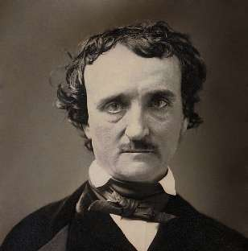

Борис Акунин
Мой календарь
Вот эти две вещи очень даже совместны. Среди гениев нередко встречаются такие уроды, что любить сих богоизбранников можно только на большом расстоянии и желательно через много лет после смерти.
Сегодня - праздник всех гениев, которые возмущали современников и восхищают потомков, день рождения Эдгара Аллана По (1809–1849). По сравнению с ним даже Байрон и Есенин были сдержанными людьми с высокоразвитым чувством социальной ответственности.
Эдгар отплатил черной неблагодарностью семье, которая взяла на воспитание бедного сиротку и любила его, как родного сына.
За карточные долги неславного юношу выгнали из университета.
За нарушения дисциплины - с военной службы.
За алкоголизм - с работы в газетной редакции.
Невесте он поклялся, что бросит пить, - и накануне свадьбы надрался. Брак не состоялся.
Когда добрый человек, поверивший в талант мистера По, пообещал ему осуществление всех желаний: карт-бланш на любое творчество, обеспеченность, покой и выслал денег на дорогу, литератор деньги взял, а приехать не приехал. Умер он во время очередного запоя, в белой горячке.
В общем, это была бы чрезвычайно дурная, даже постыдная судьба в духе «жил грешно и умер смешно», если бы в беспутной душе и насквозь проспиртованной голове Эдгара не рождались совершенно пленительные слова. Проходит время, и только это волшебство имеет значение.
У гения - восстанет. Потому что он гений, а всё остальное - химера.